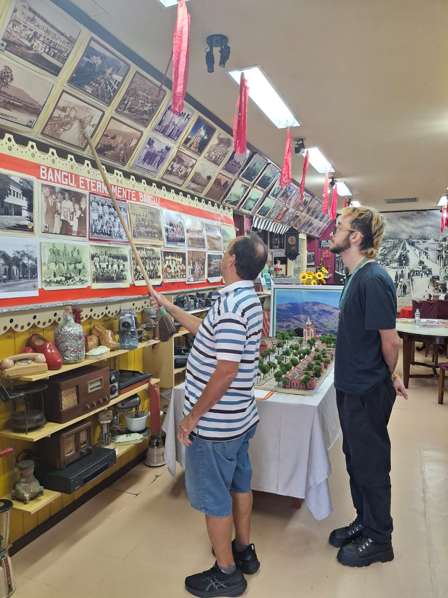
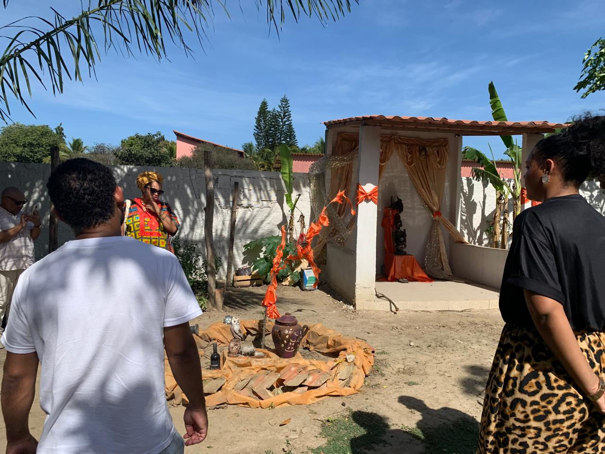
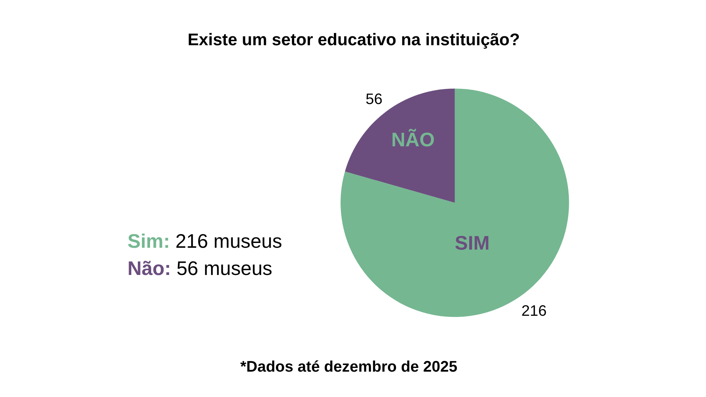
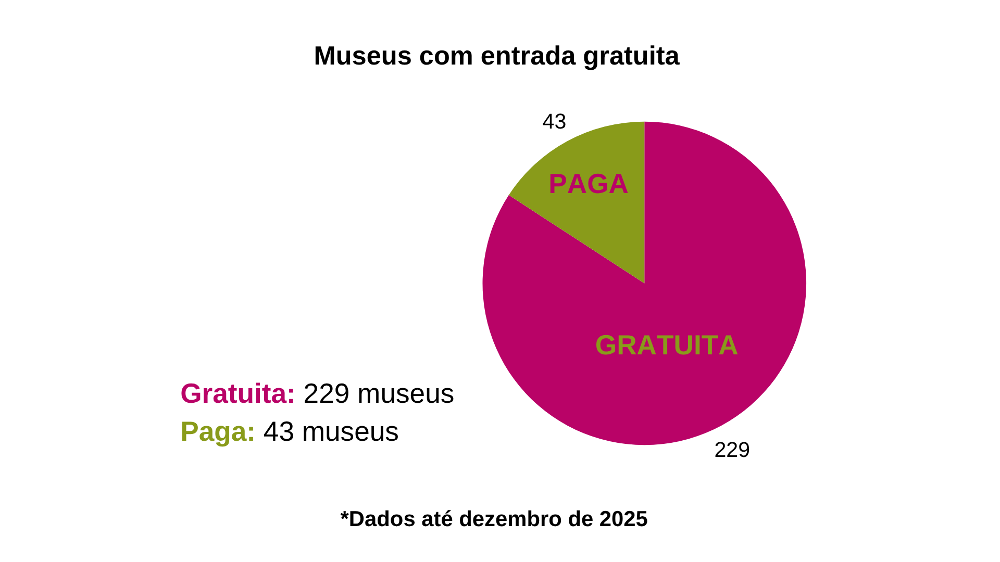
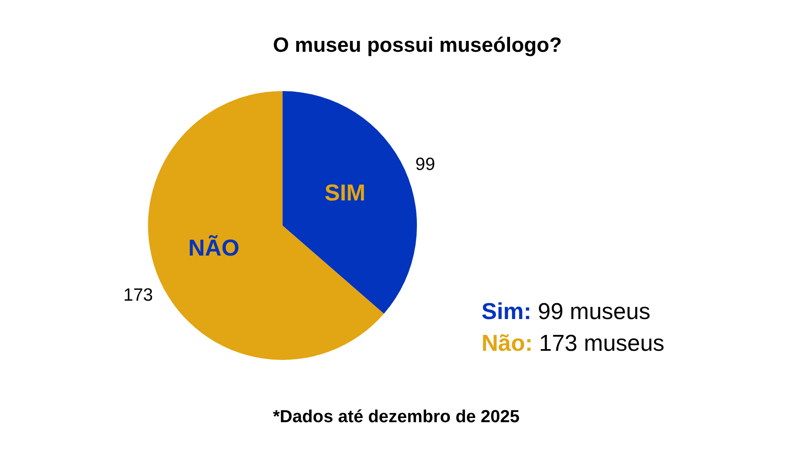
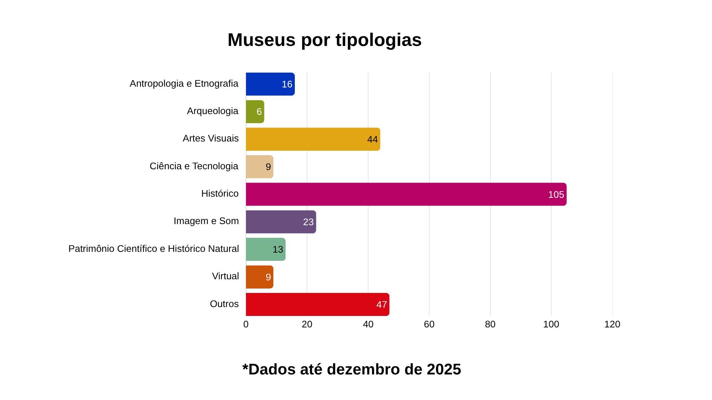

Cadastro Fluminense de Museus
0 Instituições Mapeadas
Busca Detalhada
Resultados (0)
Estado do RJApresentação Institucional
O SIM-RJ conecta museus, profissionais e iniciativas de memória em todo o estado do Rio de Janeiro, fortalecendo redes de colaboração e contribuindo para o desenvolvimento de políticas públicas que preservam, valorizam e ampliam o acesso ao patrimônio cultural fluminense.
Missão
Promover a articulação, o fortalecimento e o desenvolvimento do campo museológico fluminense, por meio de ações que buscam efetivar as políticas públicas para preservação, documentação, pesquisa, gestão e difusão dos acervos e patrimônios culturais do Estado do Rio de Janeiro.
Visão
Ser referência local em iniciativas de consolidação das áreas museológicas integradas através da preservação da memória e da diversidade cultural fluminense, o fortalecimento institucional dos museus e o acesso democrático da população ao patrimônio cultural material e imaterial.
Valores
Cooperação • Transparência • Diversidade • Acesso e inclusão • Excelência técnica • Sustentabilidade • Educação e cidadania • Engajamento dos públicos para o desenvolvimento comunitário.
O Sistema Estadual de Museus do Rio de Janeiro foi criado pelo Decreto nº 42.306, de 2010, em conformidade com o Sistema Brasileiro de Museus com o objetivo de promover políticas públicas para o setor museal fluminense.
Sua atuação busca integrar os museus e instituições afins, públicas e privadas, no território do Estado do Rio de Janeiro, atuando no intuito de fortalecer a articulação e o desenvolvimento institucional de museus, de processos museológicos, de redes de profissionais e de espaços de memória, com vistas à pesquisa, à conservação e à difusão de acervos museológicos.
As ações de capacitação voltadas a profissionais do setor também integram suas atividades e convergem para a qualificação dessas iniciativas, uma vez que contribuem para ampliar o acesso do público ao patrimônio cultural, material e imaterial, do estado do Rio de Janeiro.
O SIM-RJ estimula e acompanha a criação de programas de atividades para o desenvolvimento de ações culturais de acordo com cada localidade, planeja o Fórum Estadual de Museus, e auxilia com o suporte técnico às novas iniciativas e aperfeiçoamento para o campo museal em todo o estado.
O SIM-RJ, por meio do Cadastro Fluminense de Museus, realiza o mapeamento de espaços e iniciativas de memória no estado. É a partir do CFM que são produzidos dados sistematizados de forma periódica, abertos ao público, que servem de base para a elaboração de diagnósticos, para orientar a tomada de decisões e para a avaliação das políticas do setor.
A estrutura do SIM-RJ foi posteriormente atualizada pelo Decreto nº 46.332, de 2018.
Legislação e Atos Normativos
Marco legal de criação e regimento do Sistema Estadual de Museus do Rio de Janeiro.
Comissão Consultiva
A Comissão Consultiva do SIM-RJ é uma parceria que auxilia nos encaminhamentos das demandas do campo museal e na organização e planejamento das atividades. Sua atuação contribui para fortalecer o diálogo entre o poder público e os diferentes agentes do setor, promovendo a construção coletiva de estratégias para o desenvolvimento dos museus e espaços de memória no estado.
Entre suas atribuições, a Comissão acompanha as ações da área museológica realizadas nas diferentes regiões do Rio de Janeiro, participa das reuniões ordinárias e extraordinárias convocadas pela Coordenação do SIM-RJ, nas quais pode sugerir pautas e colaborar na reflexão sobre políticas, programas e ações voltadas aos museus.
Seus membros são eleitos para mandatos de dois anos, com possibilidade de recondução por igual período. O processo eleitoral ocorre preferencialmente durante o Fórum Estadual de Museus, garantindo a participação da comunidade museal na escolha de seus representantes.
A Comissão Consultiva tem um representante de cada uma das Regiões do Estado do Rio de Janeiro - de acordo com o Decreto no 45.419, de 19 de outubro de 2015, indicados pelos respectivos municípios, que estejam em atividade na área, além de incluir representantes de diferentes segmentos do campo cultural e museológico, incluindo um representante das instituições de ensino superior sediadas no Estado do Rio de Janeiro que mantenham curso de graduação em Museologia, três profissionais de reconhecido e notório conhecimento nas áreas da memória e da museologia, indicados pela Superintendência de Museus com anuência da Secretaria de Estado de Cultura, e um representante do Conselho Estadual de Cultura. Essa composição busca reunir diferentes perspectivas e experiências, fortalecendo o caráter plural e colaborativo da atuação do SIM-RJ.
A Comissão é presidida pelo(a) Secretário(a) de Estado de Cultura e Economia Criativa ou por representante por ele(a) indicado(a). A participação na Comissão não é remunerada, sendo considerada prestação de serviço público relevante.
Segue abaixo sua distribuição:
- Metropolitana I / Capital = Rio de Janeiro
- Metropolitana II / Baixada Fluminense = Belford Roxo, Duque de Caxias, Japeri, Magé, Mesquita, Nilópolis, Nova Iguaçu, Paracambi, Queimados, São João de Meriti e Seropédica.
- Metropolitana III / Leste Fluminense = Itaboraí, Maricá, Niterói, Rio Bonito, São Gonçalo e Tanguá.
- Região Noroeste Fluminense = Aperibé, Bom Jesus do Itabapoana, Cambuci, Italva, Itaocara, Itaperuna, Laje do Muriaé, Miracema, Natividade, Porciúncula, Santo Antônio de Pádua, São José de Ubá e Varre-Sai.
- Região Norte Fluminense = Campos dos Goytacazes, Carapebus, Cardoso Moreira, Conceição de Macabu, Macaé, Quissamã, São Fidélis, São Francisco do Itabapoana e São João da Barra.
- Região Serrana = Bom Jardim, Cachoeiras de Macacu, Cantagalo, Carmo, Cordeiro, Duas Barras, Guapimirim, Macuco, Nova Friburgo, Petrópolis, Santa Maria Madalena, São José do Vale do Rio Preto, São Sebastião do Alto, Sumidouro, Teresópolis e Trajano de Moraes.
- Região das Baixadas Litorâneas = Araruama, Armação dos Búzios, Arraial do Cabo, Cabo Frio, Casimiro de Abreu, Iguaba Grande, Rio das Ostras, São Pedro da Aldeia, Saquarema e Silva Jardim.
- Região Médio Paraíba = Barra do Piraí, Barra Mansa, Itatiaia, Pinheiral, Piraí, Porto Real, Quatis, Resende, Rio Claro, Rio das Flores, Valença e Volta Redonda.
- Região Centro-Sul = Areal, Comendador Levy Gasparian, Engenheiro Paulo de Frontin, Mendes, Miguel Pereira, Paraíba do Sul, Paty do Alferes, Sapucaia, Três Rios e Vassouras.
- Região Costa Verde = Angra dos Reis, Itaguaí, Mangaratiba e Paraty.
Equipe Técnica SUPMU
Superintendência de Museus / Planejamento / Assessoria

Lucienne Figueiredo
Superintendente de Museus

Gloria Dias
Administrativo
Brunna Ellen
Assistente
Coordenação do Sistema Estadual de Museus

Arthur Medeiros
Assistente

Pedro Dias
Assistente

Beatriz Barcelos
Assistente
Catharyna Reimol
Estagiária
Coordenação de Museologia

Ingrid Fiorante
Coordenadora de Museologia
Stephannie Macena
Assistente
Wanessa Arão
Estagiária
O que é o CFM?
O Cadastro Fluminense de Museus (CFM) é um instrumento do Sistema Estadual de Museus do Rio de Janeiro (SIM-RJ), no âmbito da Secretaria de Estado de Cultura e Economia Criativa, destinado ao mapeamento, diagnóstico e difusão do conjunto de museus e instituições museológicas existentes no estado. Por meio do cadastro, são sistematizadas informações sobre instituições pertencentes às esferas públicas, privadas ou ao terceiro setor, contribuindo para a produção de dados e para o fortalecimento das políticas voltadas ao campo museal fluminense.
A adesão ao CFM é voluntária e ocorre mediante o preenchimento dos campos obrigatórios do formulário de cadastro disponibilizado pelo SIM-RJ. A partir dessa inscrição, as instituições passam a integrar o Sistema Estadual de Museus, fortalecendo a rede de articulação entre museus, profissionais e iniciativas de memória em todo o estado do Rio de Janeiro.
Para os fins do regimento do SIM-RJ, consideram-se instituições museológicas os espaços culturais e de práticas sociais, sem fins lucrativos, colocados a serviço da sociedade e de seu desenvolvimento, que possuem acervos e exposições abertas ao público. Esses espaços têm como objetivos ampliar as possibilidades de construção identitária, estimular a percepção crítica da realidade cultural brasileira, promover a produção de conhecimento e ampliar as oportunidades de lazer. Essa definição está alinhada aos conceitos de museu estabelecidos pelo Instituto Brasileiro de Museus (IBRAM) e pelo Conselho Internacional de Museus (ICOM).
As instituições cadastradas no CFM passam a ter acesso a diferentes ações promovidas pelo SIM-RJ, pela Superintendência de Museus e pela Secretaria de Estado de Cultura e Economia Criativa, como programas de apoio técnico, capacitação profissional, articulação em rede e iniciativas de comunicação e promoção do setor. Além disso, podem ter suas atividades e serviços divulgados em campanhas institucionais das quais tenham participado, bem como utilizar as marcas e formas de identificação do sistema em ações de promoção ou divulgação relacionadas às iniciativas apoiadas.
Ao integrar o CFM, as instituições também assumem compromissos com a manutenção e atualização de suas informações cadastrais, com a transparência na apresentação de dados sobre suas atividades e com a observância da legislação e das normas éticas que regem o campo museológico, incluindo o Código de Ética do Conselho Internacional de Museus (ICOM). Dessa forma, o cadastro contribui para consolidar uma base de informações confiável e atualizada sobre o setor museal fluminense, fortalecendo a cooperação entre instituições e apoiando o desenvolvimento de políticas públicas para os museus do estado do Rio de Janeiro.
Instituições Cadastradas
Listagem completa das instituições museológicas mapeadas no Estado do Rio de Janeiro.
Painel de Dados Gráficos do CFM
Panorama quantitativo das instituições museológicas fluminenses consolidado no Cadastro Fluminense de Museus.




Como Utilizar a Plataforma SIM-RJ / CFM
Guia de orientação para gestores de instituições museológicas, pesquisadores e operadores do sistema.
Consulta e Filtros
Utilize a barra lateral de Busca Detalhada na página inicial para cruzar informações por Município, Região (identificada pela cor do pino no mapa), Natureza, Tipologia de Acervo, Turno e Acessibilidade.
Fichas Institucionais
Ao clicar sobre o pino colorido no mapa ou no botão Ver Ficha na lista lateral, são apresentados os dados públicos de serviço, endereço, contato, horário de visitação, acervo e histórico institucional.
Gestão e Visibilidade
Na Área do Gestor, a equipe técnica da SUPMU gerencia a visibilidade de campos sensíveis (individualmente ou em bloco), audita o histórico de edições por operador e gerencia as instituições sem geolocalização.
Atualização Cadastral
Instituições que desejem atualizar seus dados ou aderir ao CFM podem contatar diretamente a Superintendência de Museus ou enviar solicitação pela seção de Atendimento e FAQ.
Referência Nacional e Integração MuseusBr
O modelo de governança de dados do CFM dialoga com os parâmetros nacionais do Instituto Brasileiro de Museus (IBRAM).
Fórum Estadual de Museus do Rio de Janeiro
Sobre o Fórum e Memorial das Edições
O Fórum Estadual de Museus do Rio de Janeiro, planejado e coordenado pelo SIM-RJ / Superintendência de Museus da SECEC-RJ, constitui a principal instância de encontro, articulação, debate técnico e deliberação democrática do setor museológico fluminense. Durante o Fórum, profissionais, pesquisadores, estudantes, gestores culturais e representantes de museus públicos, privados e comunitários avaliam diretrizes para as políticas públicas de memória e realizam o processo eleitoral da Comissão Consultiva do SIM-RJ.
Memorial de Edições (Histórico de Encontros)
Fórum Estadual de Museus do Rio de Janeiro — Edição 2026
Tema central: Sustentabilidade, Redes Territoriais e Democratização do Acesso ao Patrimônio Fluminense.
Espaço reservado para inserção da carta final do evento, caderno de resumos, galeria de fotos e ata de posse da Comissão Consultiva.
Fórum Estadual de Museus do Rio de Janeiro — Edição 2024
Tema central: Educação Museal, Inventários Participativos e Preservação de Acervos no Interior do Estado.
Espaço reservado para relatórios consolidados, grupos de trabalho (GTs) e encaminhamentos regionais.
Edições Históricas do Fórum Estadual de Museus (2010–2022)
Consolidação das memórias, regimentos e cartas produzidas desde a criação do SIM-RJ pelo Decreto nº 42.306/2010.
Podcast Museus RJ
Ouça o Podcast Oficial do Campo Museal Fluminense
Diálogos, entrevistas, experiências de gestão de acervos, educação museal e patrimônio cultural nas diferentes regiões do Estado do Rio de Janeiro.
Diretrizes do Campo e Documentos IBRAM
Referências normativas, manuais técnicos e políticas nacionais do Instituto Brasileiro de Museus (IBRAM) e do ICOM.
Estatuto de Museus (Lei nº 11.904/2009) e Decreto nº 8.124/2013
Estabelece os princípios fundamentais, obrigações institucionais, regime de proteção de acervos e diretrizes para criação e gestão de museus no Brasil.
Política Nacional de Educação Museal (PNEM)
Princípios e diretrizes para o fortalecimento da dimensão educativa nos museus, formação integral e participação comunitária.
Subsídios para a Elaboração de Planos Museológicos
Guia metodológico do IBRAM para estruturação do diagnóstico institucional e dos programas de acervo, exposições, educativo, pesquisa e segurança.
Código de Ética para Museus (ICOM)
Normas internacionais de conduta ética na aquisição, documentação, conservação, exposição e gestão de coleções museológicas.
Caixa de Ferramentas para Instituições de Memória
Manuais técnicos, modelos operacionais, instrumentos de gestão e sistemas integrados para o trabalho cotidiano nos museus fluminenses.
Documentação e Inventário
Modelos de fichas de catalogação, numeração de objetos, livro de tombo, termos de doação e empréstimo de acervo.
- Modelo de Ficha de Catalogação Básica
- Termo de Doação e Cessão de Direitos
- Guia de Marcação Física de Objetos
Conservação Preventiva e Segurança
Instruções práticas para higienização, acondicionamento em reserva técnica, controle higrotérmico e gerenciamento de riscos.
- Planilha de Monitoramento Ambiental
- Protocolo de Higienização de Acervos
- Guia de Prevenção de Sinistros
Sistemas de Gestão e Integração
Acesso rápido aos portais administrativos e sistemas estaduais de gestão museológica e governamental.
FAQ: Dúvidas, Críticas e Sugestões
Perguntas frequentes sobre o Sistema Estadual de Museus e canal direto de comunicação com a Superintendência de Museus.
Perguntas Frequentes (FAQ)
Envie sua Dúvida, Crítica ou Sugestão
Em Construção
Conteúdo em fase de sistematização pela equipe técnica.